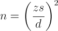
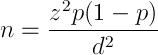
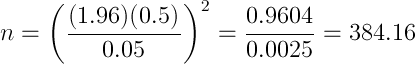
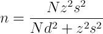
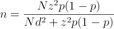

برای تحقیق خود به چه تعداد پاسخگو نیاز دارید؟ محاسبه حجم نمونه یک چالش همیشگی برای پژوهشگران بوده است. واضح است که یک نمونهی بزرگ میتواند به نتایج دقیقتر بیانجامد، ولی افزایش حجم نمونه معمولاً هزینهبر است.
با استفاده از روشهای آماری میتوان تا حد زیادی نسبت به محاسبه حجم نمونه کافی با در نظر گرفتن سطح اطمینان مشخص، مطمئن بود. قبل از محاسبه حجم نمونه باید چند شاخص را درباره جامعه هدف و نمونه خود تعیین کنید.
1- حجم جامعه (N): تعداد کل افرادی که در حیطه موضوع تحقیق شما قرار دارند، چقدر است؟ برای مثال، اگر مایلید درباره کارمندان بانکهای تهران بدانید، حجم جامعه عبارت است از: تعداد کل کارمندان بانکهای تهران. اگر درباره این تعداد اطلاعات کافی ندارید، نگران نباشید. معمولاً اطلاعات مربوط به جامعه نامعلوم یا تقریبی هستند.
2- حاشیهی خطا (بازه اطمینان) (d): هیچ نمونهای ایدهآل نیست، بنابراین باید تصمیم بگیرید که چه میزان خطا دراندازهگیری شاخص مورد نظر شما مجاز است. در حقیقت بازه اطمینان تعیین میکند که مقدار بالاتر یا پایینتر بودن میانگین نمونهای از میانگین جامعه تا چه اندازه برای شما قابل اغماض است؟ معمولاً در گزارشات، برآوردهای نمونهای را با ذکر یک بازه اطمینان ارائه میدهند. برای مثال: «68 درصد از رأی دهندگان به لایحه دولت اعتراض دارند، با حاشیهی خطای %5-/+.»
3- سطح اطمینان: میزان اطمینان مورد نظر شما از قرار گرفتن میانگین واقعی در بازه اطمینان چقدر باشد؟ سطوح اطمینان رایج عبارتند از: 90% اطمینان، 95% اطمینان و 99% اطمینان.
4- عامل چهارم مربوط به تغییرات پیشبینی شده در پاسخهاست. اگر از نمونه برای تخمین میانگین جامعه استفاده میکنید باید بدانید پراکندگی مورد انتظار شما در پاسخها چقدر است؟ این نوع اطلاعات معمولاً از تحقیقات قبلی حاصل میشود. اگر در این زمینه اطلاعاتی در دست ندارید، بهتر است از 0.5 استفاده کنید. این مقدار تضمین میکند که نمونه شما به اندازه کافی بزرگ باشد. و اما اگر بخواهید از نمونه برای تخمین یک نسبت (p) در جامعه استفاده کنید باید پیش برآوردی از این نسبت را استفاده کنید، در این مورد نیز بهترین و محافظهکارترین انتخاب، مقدار 0.5 است.
سطح اطمینان شما با یک Z-score در نظر گرفته میشود که مقداری ثابت برای استفاده در فرمول حجم نمونه است. مقادیر Z-score برای سطوح اطمینان رایج عبارتند از:
- 90% – Z Score = 1.645
- 95% – Z Score = 1.96
- 99% – Z Score = 2.326
حال میتوانید با جایگذاری مقادیر شاخصهای بالا در فرمول زیر، حجم نمونهی مورد نیاز خود را محاسبه کنید:
حجم نمونهی مورد نیاز برای برآورد میانگین جامعه:

حجم نمونهی مورد نیاز برای برآورد نسبت جامعه:

برای مثال، اگر بخواهیم با اطمینان 95%، انحراف استاندارد 0.5 و حاشیهی خطای 5%-/+ حجم نمونه را تعیین کنیم، داریم:

بنابراین، حجم نمونه برابر 385 محاسبه شد.
فرمولهای بالا برای حالتی که حجم جامعه نامعلوم یا خیلی زیاد باشد، استفاده میشود. اگر حجم جامعه (N) مشخص باشد، میتوان از فرمول زیر برای تعیین حجم نمونه استفاده کرد:
حجم نمونه لازم برای برآورد میانگین وقتی حجم جامعه (N) مشخص باشد:

حجم نمونه لازم برای برآورد نسبت وقتی حجم جامعه (N) مشخص باشد:

اگر فکر میکنید که حجم نمونهی محاسبه شده خیلی زیاد است، میتوانید به آرامی سطح اطمینان را کاهش یا حاشیهی خطا را افزایش دهید. البته با این کار، شانس بروز خطا در نمونهگیری افزایش مییابد ولی به هر حال، حجم نمونهی مورد نیاز به طور چشمگیری کاهش مییابد.
توجه: در فرمولهای بالا معمولاً چون از قبل اطلاعاتی درباره توزیع پاسخها در دست نیست، به جای مقادیر s و p از 0.5 که محافظه کارترین مفدار است، استفاده میشود.
اگر برای تعیین حجم نمونهی مورد نیاز خود نیاز به اطلاعات بیشتری دارید، میتوانید با ما تماس بگیرید و از مشاوره ما در این زمینه به صورت رایگان بهره ببرید.